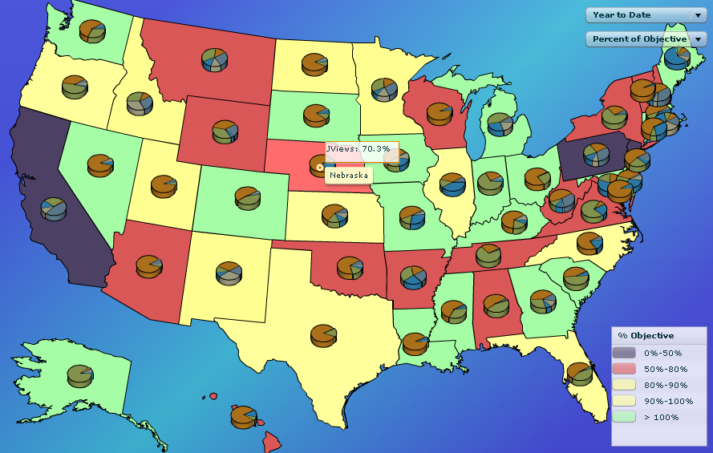

Note
This appendix sections describes how to create, modify
or enhance maps based on MX technology available in earlier versions
of IBM®
ILOG ElixirFor instructions about using Spark
map technology, in the current version of IBM®
ILOG Elixirsee:
MapsIBM® ILOG Elixir provides map display capabilities
for creating map-based dashboards. The components can be used to display
information such as sales revenues or stock levels in all the countries
that you operate in.
Each map item, such as a country or a state, can be panned
or zoomed, is selectable, and has a highlight color to indicate that
it is selected.
You can overlay your color-coded map display with any Adobe®
Flex®
objects such as custom
charts, buttons, grids, and icons.
There are six maps provided in IBM
ILOG Elixir as subclasses of the
MapBase class:
-
A map of the United States showing all
the states:
USStatesMap-
-
The following map shows a number of features that you
can program into your map display.
For example, states are highlighted and a tool tip is
displayed when the pointer is rolled over them, and each state has
a pie chart showing the product sales split.
